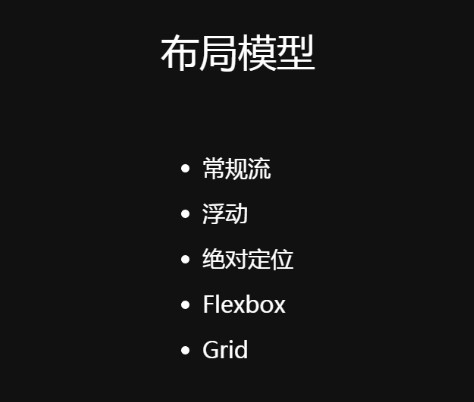

浮动

流与标准文档流
CSS 世界中，HTML 是魔法石，选择器就是选择法器，CSS 属性就是魔法师，CSS 各种属性值就是魔法师的魔法技能，浏览器就是他们所在的“王国”，操作系统就是他们所在的世界，不同的操作系统代表不同的平行世界。【“王国”会不断更新法律法规（版本升级），决定是否允许使用新的魔法石（HTML5 新标签新属性），是否允许新的魔法师入“国籍”（CSS3 新属性），或者允许魔法师使用某些新技能（CSS 新的属性值），以及是否舍弃某些魔法技能（如 display:run-in）】
Web网页的制作，是一个文档流（简称为“流”），流就像一条“看不见”的水流。块级元素、行内元素分别对应：盛水容器中的水和木头。
注释——普通流：很多人或者文章称之为文档流或者普通文档流，其实标准里根本就没有这个词。如果把文档流直译为英文就是 document flow ，但标准里只有另一个词，叫做 普通流 （normal flow)，或者称之为常规流。但似乎大家更习惯文档流的称呼，因为很多中文翻译的书就是这么来的。比如《CSS Mastery》，英文原书中至始至终都只有普通流 normal flow（普通流） 这一词，从来没出现过document flow （文档流）
懒得修改就叫文档流吧。
普通流：html中元素（行内元素、块级元素）从左往右、自上而下的顺序。通过破坏“流”可以实现特殊布局。“一江春水向东流”和“飞流直下三千尺”的流向是可以改变的。
普通流
● 除根元素、浮动元素和绝对定位元素外，其它元素都在普通流之内(in-flow) （注：固定定位已经包含在绝对定位里了）
● 而根元素、 浮动和绝对定位的元素会脱离普通流(out of flow)
● 普通流中的盒子，属于块级格式化上下文或行级格式化上下文


什么是文档流呢？文档流有以下特点：
1、顶部高矮不齐，底部始终对齐

2、自动换行
无论字体大小有多高，图片大小有多高，底边始终对齐，而且会自动换行。
3、空白折叠现象
空白折叠现象：文档中无论输入多少空格或者是回车，都会被折叠为一个空格。

浮动
浮动是一个CSS的定位属性。（绝对定位的元素也脱离文档流，但是绝对定位元素不会影响其他元素的位置，其他元素也不会影响绝对定位元素，无论它们是否相互接触）
浮动在小案例的好处：
例如当头像图片改变大小时，盒子中的文本将重排自适应：

可以为父容器使用相对定位，头像图片使用绝对定位来实现相同的布局。但是文本不会受到头像的影响，无法在尺寸变化时重排：

浮动的初衷只是用来让文字环绕图片而已，仅此而已。
浮动：在页面效果上可以通俗的理解为“这个元素漂起来了（在水上）”，例如让某个div元素漂浮在标准文档流之上，即该元素脱离了标准文档流。但是允许文本和内联元素环绕它。作用是使元素脱离正常的文档流并使其移动到其父元素的“最左边”或“最右边”。
左浮动(float:left;)：漂浮起来后靠左排列，右浮动(float:right;)：漂浮起来后靠右排列。靠左、靠右指的是页面的左、右边缘。
div是块级元素，在页面中独占一行，自上而下排列，也就是传说中的流。如图：

图一
一个div左浮动
假设对图一的div2设置左浮动，那么div2脱离标准流，不再属于标准流；但div1、div3、div4仍在标准流，div1、div3、div4为了依次排列重新组成一个流，div3会自动向上移动来顶替div2的位置。因为浮动是漂浮在标准流之上的，所以div2挡住了一部分div3，div3看起来变“矮”了。
效果如图：

一个div右浮动
假设对图一的div2设置右浮动，div2靠页面右边缘排列，不再遮挡div3，可以清晰地看到div1、div3、div4组成的流。
效果如图：

两个相邻div左浮动
div2和div3都加上左浮动，它们不再属于标准流，因此div4会自动上移与div1组成一个“新”标准流，而浮动是漂浮在标准流之上，所以div2挡住了div4。
效果如图：

重要结论
假如某个div元素A是浮动的，如果A元素上一个元素也是浮动的，那么A元素会跟随在上一个元素的后边(如果一行放不下这两个元素，那么A元素会被挤到下一行)；
如果A元素上一个元素是标准流中的元素，那么A的相对垂直位置不会改变，也就是说A的顶部总是和上一个元素的底部对齐。
浮动元素依据HTML代码中div的顺序来决定排列顺序。
浮动元素排列的前后顺序：靠近页面边缘的一端是前，远离页面边缘的一端是后。

两个不相邻div左浮动
假如我们把div2、div4左浮动。
div2发现上一个元素div1是标准流中的元素，因此div2相对垂直位置不变，与div1底部对齐。
由于div2、div4浮动，脱离了标准流，因此div3将会自动上移，与div1组成标准流。
div4发现上一个元素div3是标准流中的元素，因此div4的顶部和div3的底部对齐。
效果如图：

三个相邻div左浮动
假如我们把div2、div3、div4都设置左浮动。
div4发现上边的元素div3是浮动的，所以div4会跟随在div3之后；
div3发现上边的元素div2也是浮动的，所以div3会跟随在div2之后；
而div2发现上边的元素div1是标准流中的元素，因此div2的相对垂直位置不变，顶部仍然和div1元素的底部对齐。
由于是左浮动，左边靠近页面边缘，所以左边是前，因此div2的左边靠近页面边缘。
效果如图：

三个相邻div右浮动
假如我们把div2、div3、div4都设置右浮动。
效果如图：

因为只要处于标准文档流中，文字和图片的底部就必然处于同一个水平线上，所以要实现文字环绕效果必须脱离标准文档流。
所谓的脱离文档流即不遵循标准文档流的规则。
脱离文档流的表现一：脱离文档流后元素漂浮在文档流之上（不再占据之前空间，让给标准流元素）
float属性开启一个新的流位于漂浮在文档流之上，从而达到脱离文档流的效果。如图：

脱离文档流表现二：行内元素可以设置宽高，块级元素不再独占一行

脱离文档流表现三：文本内容不会被覆盖
浮动的元素虽然处于文档流的上方，但是并不会遮挡文本（文字图片链接），文本会自动浮动，形成文本环绕效果。

脱离文档流表现四：子元素不会撑出父容器的高，但子元素仍在父元素中浮动
父元素塌陷问题：父元素没有设置高度值时（height:auto）,因为父元素的高度默认为子元素的高度，当子元素浮动后，子元素脱离文档流也就不再遵循文档流中块级元素和行内元素的规则——所以子元素就不会再撑出父元素的高度。
文档流中块级元素和行内元素的规则：
块级元素不设置宽度，那么宽度将默认变为父容器的100%。
块级元素不设置高度，那么高度默认为包裹内容，或者说容器内的孩子会将容器的高度撑起来。
行内元素默认宽高为内容宽高。

绿色盒子并没有完全浮动到页面顶部，而是浮动到父元素的顶部。所以，浮动的元素的位置仍然会受到父元素的限制，即只会在父元素中进行浮动。

float总结：
浮动的特点可以用六点总结：脱标补座（其它补上）、收缩破坏、偏移贴边、文字重排、与上一个元素底部对齐或顶部对齐!
脱离标准流相当于离职顶替。
float在绝对定位和display为none时不会被应用！
浮动的“块状化”：float 属性值不为 none，其 display 计算值为 block 或 table
所以 text-align 对浮动元素是无效的
浮动的“包裹性”：让按钮的大小自适应于文字的个数，这就需要按钮要自动包裹在文字的外面。我们用什么方法实现呢？一就是display:inline-block；二就是float。所以包裹性一目了然：

block元素不指定width的话，默认是100%，一旦让该div浮动起来，立刻会像inline元素一样产生包裹性，宽度会跟随内容自适应。（块级元素默认宽度为父元素的整个宽度，浮动元素的默认宽度为能包含其内容的最小宽度，这也是通常float元素需要手动指定width的原因）所以浮动就是个带有方位的display:inline-block属性。但是float不等于display:inline-block，display:inline-block仅一个从左往右的水平排列方向，而float具有方向性：可以从右往左排列，这就是两者的差异。
类似于display:block; float:left;的CSS代码超过95%的情况是没有道理的(display:block是多余的)。
浮动的“破坏性”：浮动会破坏inline-boxes的高度包络线，造成元素无法与文字这类inline-boxes同行排列。图片实际占据的高度为0，但是浮动的“包裹性”图片仍然有自身的内容宽度，文字形成新的inline-boxes高度包络线（流），从而实现文字环绕图片的初衷。
图片没有应用float属性，其本身有一个正常的inline box，这个inline box高度等于图片的height，在这行元素中，图片这个inline box的高度最高，于是传递给了line box，line box是个真正意义上的高度，直接作用于containing box（就是这里的li元素，所以li元素有一个高度）。


float的影响：
1.浮动会脱离文档流（和 position: absolute; 一样），不再占据原来那层的空间，漂浮在标准流上面会压住文档流导致覆盖下一层的元素。

浮动盒会一直漂到其外边缘挨到容器边缘或另外的浮动盒。
浮动元素的下一个兄弟元素是块级元素，因为浮动元素脱离文档流:不再占用位置了，或者说不在这一层了，所以它的下一个元素为了依次排列重新组成一个普通流会在浮动元素下方补上它的位置。
下面例子中熊大左浮动，熊二不浮动：


浮动元素不会影响其后面的流内块级盒子，块级盒子宽高保持原样。下面例子中<img>左浮动，但<p>元素是块级盒子不可折叠，所以<p>元素会当<img>不存在，<p>的宽高还是原来的样子。

浮动元素的下一个兄弟元素是行内元素（通常是文字），浮动元素不会遮挡文本（文字图片链接），浮动元素会影响文本的位置，行级盒子有可折叠性，浮动元素后面的行级盒子会变短以避开浮动元素，形成「文字环绕图片」的效果。即不管是左浮动还是右浮动，行盒子都会伸缩以适应浮动盒子的大小。当有浮动元素时，行盒子会从向左浮动的元素的右边缘延伸到向右浮动的元素的左边缘。


2. 浮动元素对上一个兄弟元素没有任何影响。
浮动元素的上一个兄弟元素是文档流中的元素，那么浮动元素的顶部总会和上一个元素的底部对齐。

浮动元素的上一个兄弟元素也是浮动元素，浮动元素会跟随在上一个兄弟元素的后边并且都顶部对齐(如果一行放不下这两个元素，浮动元素会被挤到下一行）

3.父元素没有设置高度值时（height:auto），浮动子元素会造成父元素的高度塌陷，子元素不会再撑出父元素的高，但子元素只会在父元素中浮动。

5.包含块太窄无法容纳水平排列的三个元素时，其他浮动块会自动向下浮动，直到有足够的空间。如果浮动过程中发现有浮动框高度不一致，则会被“卡住”。
没有足够的水平空间 不同高度的框


6.元素浮动后行内元素可以设置宽高，块级元素不再独占一行。相当于设置成带有方位的display:inline-block属性。


浮动布局
浮动的目的：为了让多个块级元素在同一行上显示。使用inline-block会有间隙。


浮动布局的核心原理：包含块（包裹）的概念——需要使用标准流的块级父元素包裹浮动的子元素。避免浮动元素脱离文档流时，其它标准流元素占据浮动元素的位置跑到浮动元素下方！！！
如图：

浮动元素会找离它最近的父元素对齐，但是不会超出内边距的范围（不会贴着父元素的边框，最多只能贴着父元素的padding）


一个父盒子里的子盒子，只要一个子盒子浮动，其他子盒子也要浮动才能一行对齐显示。
版心和布局流程
版心：网页主体内容区域


通栏：跟浏览器一样宽，不需要版心（图中的top和footer）


使用浮动可以使布局与源码顺序不同。这是因为浮动遵循同一方向浮动的先后顺序。


第二个<div>源代码顺序上比第三个<div>等级要高 (DOM上第二个<div>先出现并声明了float: right;) ，所以在浮动顺序上也会比第三个<div>等级要高。


非浮动元素使用外边距不能使它们与浮动元素之间来创建空间，这是因为浮动元素脱离文档流是飘在文档流上方，而非浮动元素实际上是在浮动元素后面运行。


清除浮动

闭合浮动：更确切的含义是使浮动元素闭合，从而减少浮动带来的影响。我们们想要达到的效果更确切地说是闭合浮动，而不是单纯的清除浮动，例如在footer上设置clear：both清除浮动并不能解决wrap高度塌陷的问题。所以用闭合浮动比清除浮动更加严谨。

在支持BFC的浏览器（IE8+，firefox，chrome，safari）通过创建新的BFC闭合浮动；
在不支持 BFC的浏览器 （IE6-7），通过触发 hasLayout 闭合浮动。


浮动元素脱离文档流时其他文档流元素将显示在浮动元素旁边，如果我们想要阻止浮动元素后面的文档流元素向上移动，我们需要清除浮动！
设置了clear属性的元素不会像浮动元素希望的那样向上移动到浮动元素附近，而是会自己向下移动经过浮动元素。

为了确保Footer保持在两个浮动列的下方,可以使用clear属性：

清除浮动其实通常就一个目的：就是解决父元素高度塌陷的问题！
塌陷原因是：元素含有浮动属性 – 破坏inline box – 破坏line box高度 – 没有高度 – 塌陷。
什么时候会塌陷：当标签里面的元素只有样子没有实际高度时会塌陷。

clear
● 指定元素哪一边不能与之前的浮动框相邻
●取值: left | right | both
定义没有错，只不过它描述的太模糊。both属性值用的最多，其他两个很少见。
举个栗子
假如页面中只有两个元素div1、div2，它们都是左浮动，场景如下：

如果单纯根据官方定义，读者可能会尝试这样写：在div1的CSS样式中添加clear:right;，理解为不允许div1的右边有浮动元素，由于div2是浮动元素，因此会自动下移一行来满足规则。
其实这种理解是不正确的，这样做没有任何效果。
对于CSS的清除浮动(clear)，一定要牢记：clear只能影响使用clear属性的元素本身，不能影响其他元素。
根据定论，要想让div2下移，就必须在div2的CSS样式中使用浮动。本例中div2的左边有浮动元素div1，因此只要在div2的CSS样式中使用clear:left;来指定div2元素左边不允许出现浮动元素，这样div2就被迫下移一行。


两个浮动前

两个浮动后


清除浮动后效果图：

推荐使用after伪元素清除浮动或者使用before和after双伪元素清除浮动。（伪元素使用一个冒号: 为了兼容旧浏览器）


.clearfix:after{display:block; content:""; height:0; clear:both; overflow:hidden; visibility:hidden;}
.clearfix{*zoom:1;}


第五种清除浮动的方法（IE、Edge和Safari不兼容）
在父元素中添加display: flow-root;
浮动的有关问题（IE6的bug）